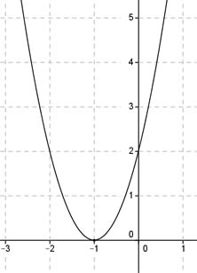

Aufgabe 101 Der Graph einer Parabel geht durch die Punkte x -4 -3 -2 -1 0 2 1 y 18 8 2 0 2 8 18 Wie lautet ihre Funktionsgleichung? Allgemeine Scheitelpunktform einer quadratischen Funktion: y = a(x - xS)2 + yS Aus der Wertetabelle abzulesen: Durch den Punkt (-1|0) geht die Symmetrieachse dieser Parabel, links und rechts davon in gleichen Abständen sind identische y-Werte. Also ist (-1|0) der Scheitelpunkt. xS = -1 , yS = 0. Der Punkt (0|2) liefert x = 0 und y = 2. In die allgemeine Form eingesetzt: 2 = a(0 - (-1))2 + 0 2 = a Gesuchte Funktionsgleichung: y = 2(x + 1)2 